Continuous Time Mediation - Monte Carlo Method
Ivan Jacob Agaloos Pesigan
2024-03-19
Source:vignettes/mc.Rmd
mc.RmdThe drift matrix and the corresponding sampling variance-covariance
matrix of the fitted OU model is available in the data object
deboeck2015phi. See this link for
more details on how the model was fitted.
data("deboeck2015phi", package = "cTMed")Using Results from the dynr Package
phi <- deboeck2015phi$dynr$phi
vcov_phi_vec <- deboeck2015phi$dynr$vcov
phi
#> x m y
#> x -0.3537864 0.02461296 -0.01454772
#> m 0.7745076 -0.47616825 0.01994299
#> y -0.5347597 0.83210494 -0.78593715
vcov_phi_vec
#> phi_11 phi_21 phi_31 phi_12 phi_22
#> phi_11 0.0027042735 -0.0014752750 0.0009491216 -0.0016194215 0.0008851215
#> phi_21 -0.0014752750 0.0044284423 -0.0026423032 0.0009805729 -0.0027181697
#> phi_31 0.0009491216 -0.0026423032 0.0064026677 -0.0006977982 0.0018134711
#> phi_12 -0.0016194215 0.0009805729 -0.0006977982 0.0020792855 -0.0011525005
#> phi_22 0.0008851215 -0.0027181697 0.0018134711 -0.0011525005 0.0034260496
#> phi_32 -0.0005694040 0.0016188053 -0.0040431377 0.0007530002 -0.0020750048
#> phi_13 0.0008549300 -0.0005869213 0.0004630856 -0.0015287013 0.0008991651
#> phi_23 -0.0004658235 0.0014784214 -0.0011209493 0.0008205870 -0.0025328492
#> phi_33 0.0002978145 -0.0008715465 0.0022717108 -0.0005175244 0.0014755785
#> phi_32 phi_13 phi_23 phi_33
#> phi_11 -0.0005694040 0.0008549300 -0.0004658235 0.0002978145
#> phi_21 0.0016188053 -0.0005869213 0.0014784214 -0.0008715465
#> phi_31 -0.0040431377 0.0004630856 -0.0011209493 0.0022717108
#> phi_12 0.0007530002 -0.0015287013 0.0008205870 -0.0005175244
#> phi_22 -0.0020750048 0.0008991651 -0.0025328492 0.0014755785
#> phi_32 0.0049840324 -0.0006222547 0.0016349169 -0.0037056607
#> phi_13 -0.0006222547 0.0020600755 -0.0010966843 0.0006863857
#> phi_23 0.0016349169 -0.0010966843 0.0033286919 -0.0019260876
#> phi_33 -0.0037056607 0.0006863857 -0.0019260876 0.0047262347Note: The input argument
phimatrix is required to have column and rownames as they are used to trace the path of the independent variable column (from = "x") to the dependent variable row (to = "y") through mediator variables (med = "m"). The argumentvcov_phi_vecdoes not require names.
Plot the Effects as a Function of the Time-Interval
med <- Med(
phi = phi,
delta_t = seq(from = 0, to = 20, length.out = 1000),
from = "x",
to = "y",
med = "m"
)
plot(med)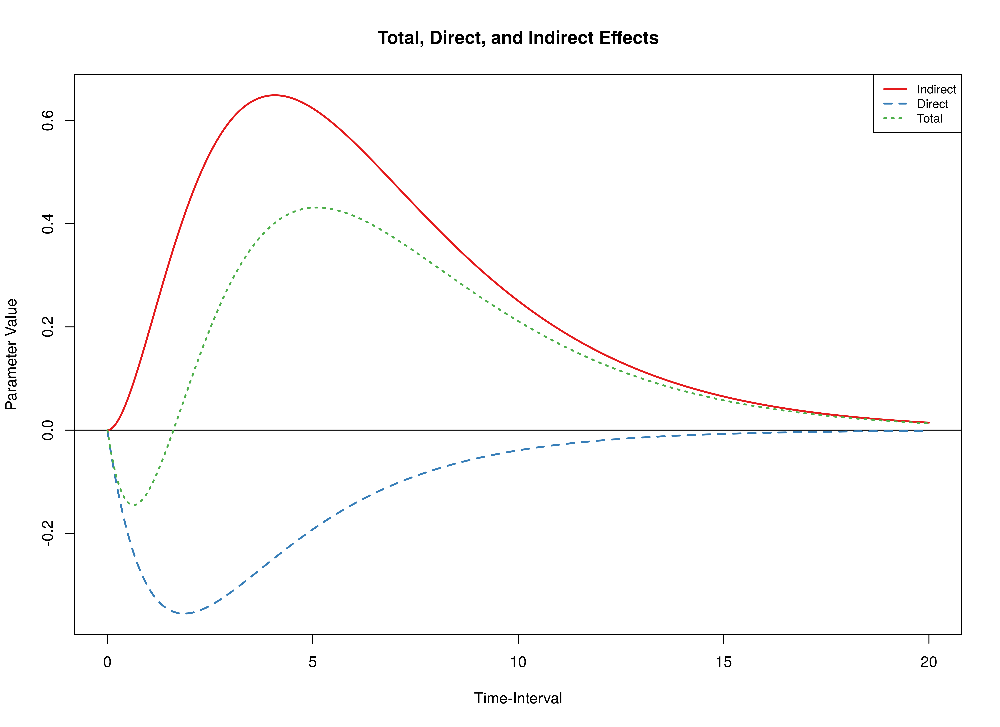
Monte Carlo Method for Total, Direct, and Indirect Effects for a Range of Time-Intervals
The Monte Carlo method confidence intervals of the total, direct, and
indirect effects from \(X\) to \(Y\) through \(M\) at a range of time-intervals (0 to 20)
is calculated using the DeltaMed() function. If the length
of delta_t is long or number of replications R
is large, using multiple cores by specifying the number of cores to use
ncores can make the calculations run faster.
mc <- MCMed(
phi = phi,
vcov_phi_vec = vcov_phi_vec,
delta_t = seq(from = 0, to = 20, length.out = 1000),
from = "x",
to = "y",
med = "m",
R = 1000L,
ncores = parallel::detectCores(),
seed = 42
)
plot(mc)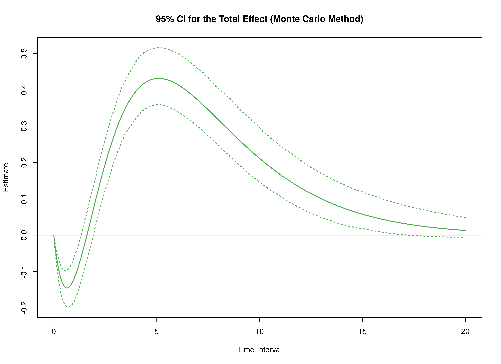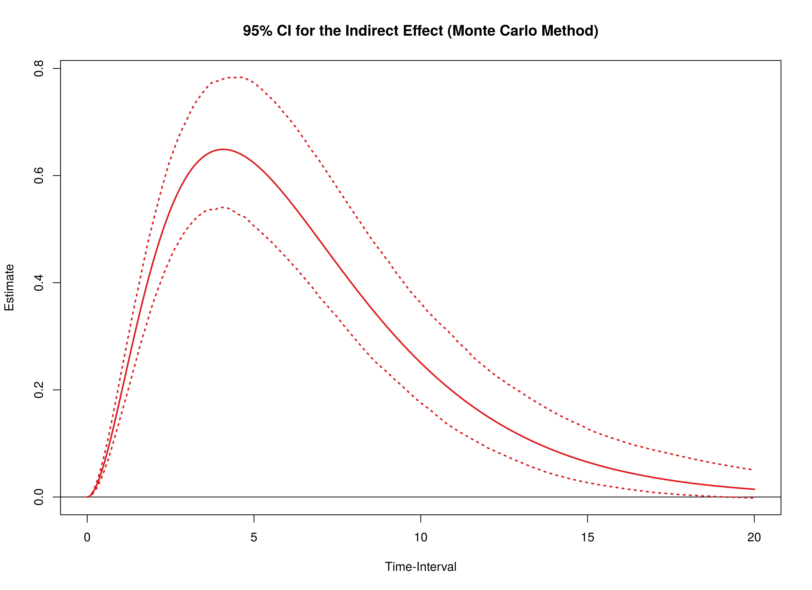
Notice that the lower and upper bounds of the confidence intervals can be asymmetric around the estimate.
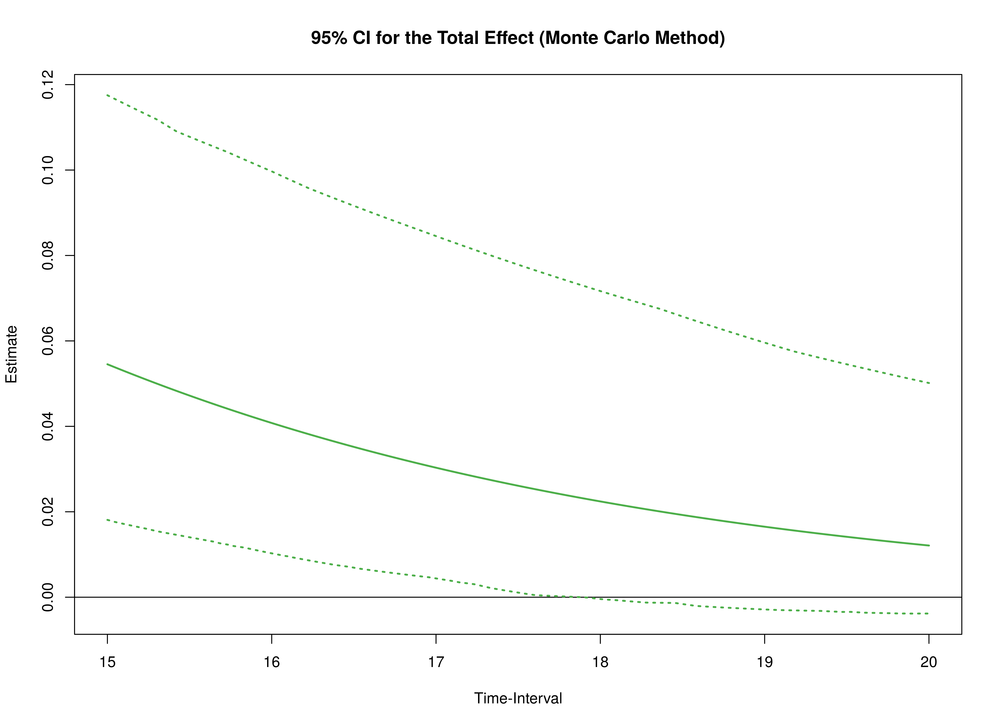 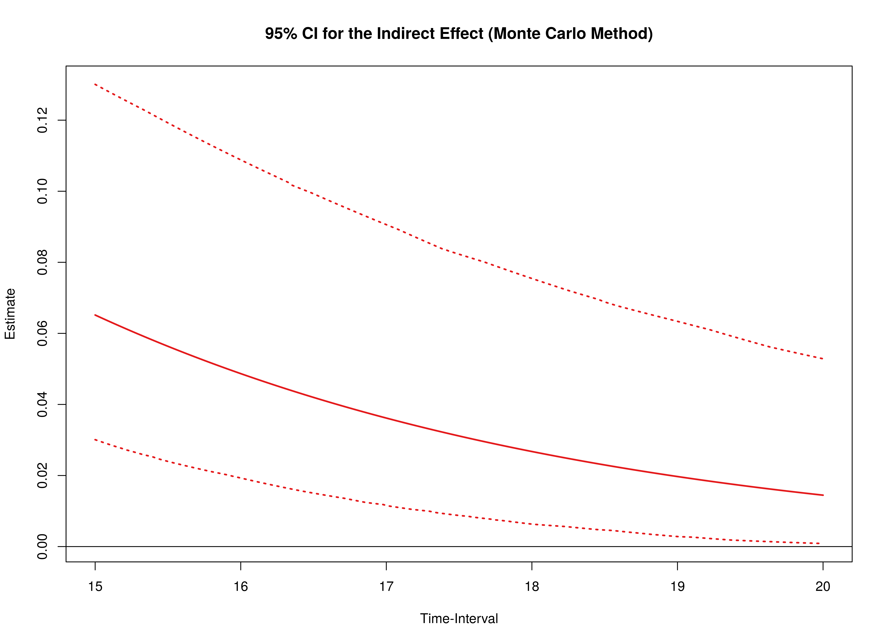
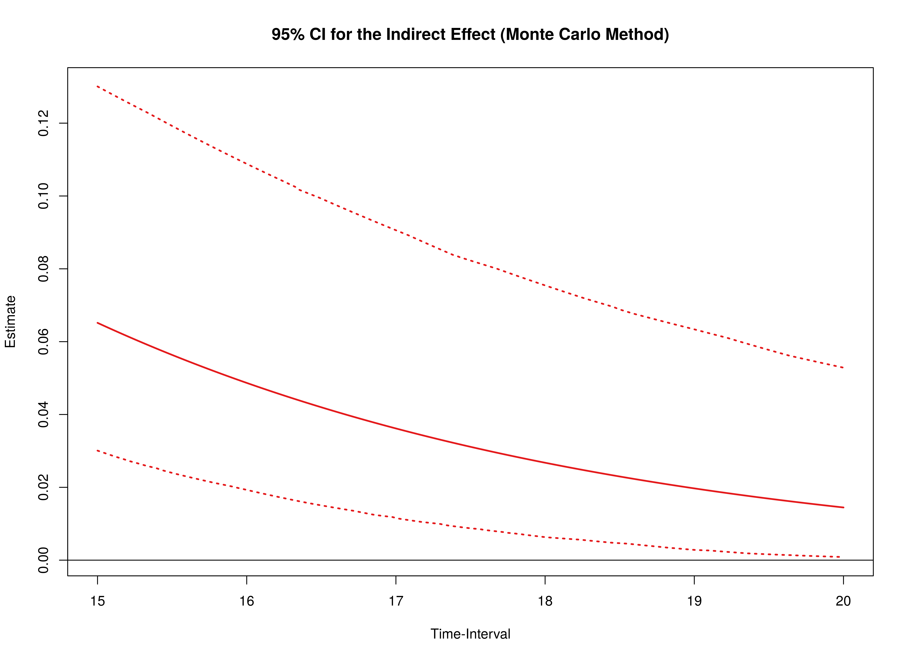
Using Results from the ctsem Package
phi in the case of the ctsem results is the
mean of the posterior distribution of the drift matrix and
vcov_phi_vec is the corresponding covariance matrix.
phi <- deboeck2015phi$ctsem$phi
vcov_phi_vec <- deboeck2015phi$ctsem$vcov
posterior_phi <- deboeck2015phi$ctsem$posterior_phi
phi
#> x m y
#> x -0.3560172 0.02264243 -0.01344054
#> m 0.7735648 -0.47936461 0.02013954
#> y -0.5315668 0.83112753 -0.78845099
vcov_phi_vec
#> [,1] [,2] [,3] [,4] [,5]
#> [1,] 0.0027203000 -0.0015970313 0.0009920594 -0.0015759171 0.0009625203
#> [2,] -0.0015970313 0.0046750800 -0.0027858588 0.0011674434 -0.0030119591
#> [3,] 0.0009920594 -0.0027858588 0.0066686739 -0.0007615475 0.0021097110
#> [4,] -0.0015759171 0.0011674434 -0.0007615475 0.0020609848 -0.0012713100
#> [5,] 0.0009625203 -0.0030119591 0.0021097110 -0.0012713100 0.0038085901
#> [6,] -0.0006497787 0.0019063097 -0.0045048618 0.0008840249 -0.0024510249
#> [7,] 0.0008091685 -0.0006900233 0.0005367671 -0.0015361385 0.0009999485
#> [8,] -0.0004633075 0.0016125298 -0.0013519017 0.0008330685 -0.0027404294
#> [9,] 0.0003380657 -0.0010394225 0.0027755591 -0.0006490546 0.0016977932
#> [,6] [,7] [,8] [,9]
#> [1,] -0.0006497787 0.0008091685 -0.0004633075 0.0003380657
#> [2,] 0.0019063097 -0.0006900233 0.0016125298 -0.0010394225
#> [3,] -0.0045048618 0.0005367671 -0.0013519017 0.0027755591
#> [4,] 0.0008840249 -0.0015361385 0.0008330685 -0.0006490546
#> [5,] -0.0024510249 0.0009999485 -0.0027404294 0.0016977932
#> [6,] 0.0055103655 -0.0007856074 0.0019507734 -0.0042293676
#> [7,] -0.0007856074 0.0020930771 -0.0010690175 0.0008387837
#> [8,] 0.0019507734 -0.0010690175 0.0034544832 -0.0021401405
#> [9,] -0.0042293676 0.0008387837 -0.0021401405 0.0052749605Monte Carlo Method for Total, Direct, and Indirect Effects for a Range of Time-Intervals
mc <- MCMed(
phi = phi,
vcov_phi_vec = vcov_phi_vec,
delta_t = seq(from = 0, to = 20, length.out = 1000),
from = "x",
to = "y",
med = "m",
R = 1000L,
ncores = parallel::detectCores(),
seed = 42
)
plot(mc)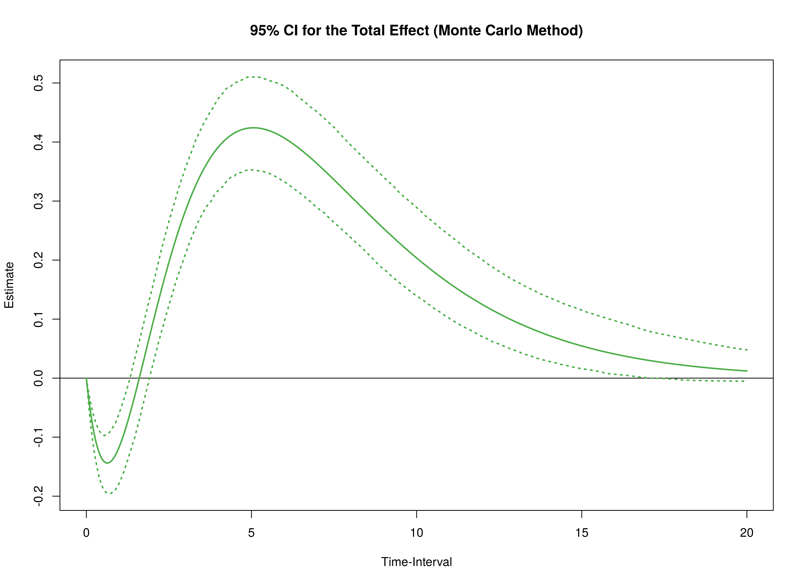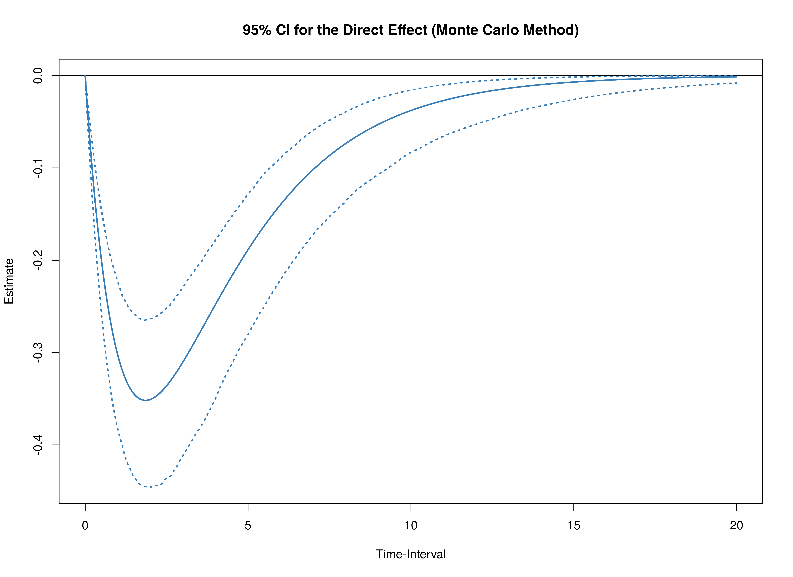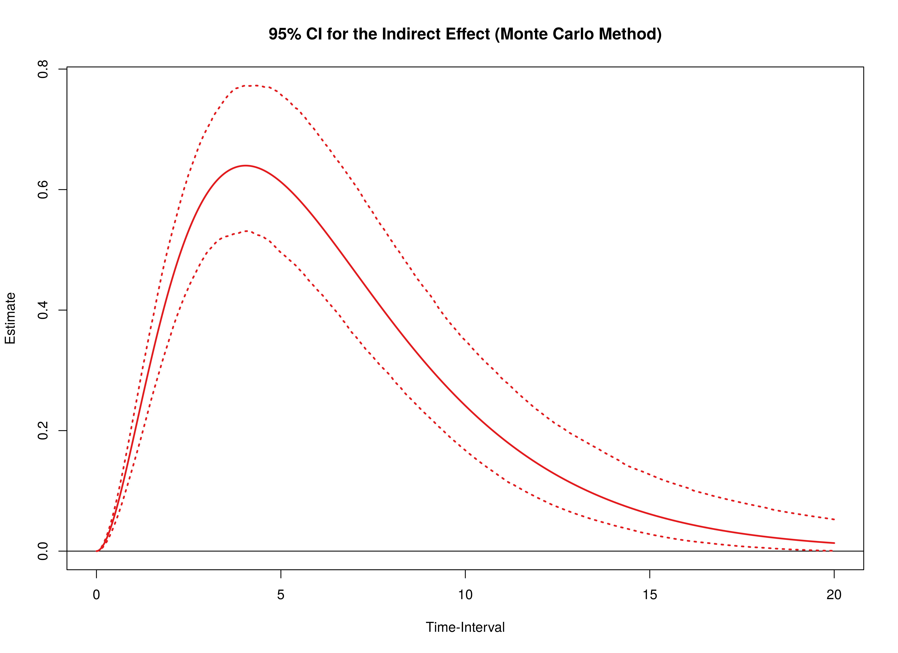
Credible Intervals for the Total, Direct, and Indirect Effects Using the Posterior Distribution of the Drift Matrix
posterior <- PosteriorMed(
phi = posterior_phi,
delta_t = seq(from = 0, to = 20, length.out = 1000),
from = "x",
to = "y",
med = "m",
ncores = parallel::detectCores()
)
plot(posterior)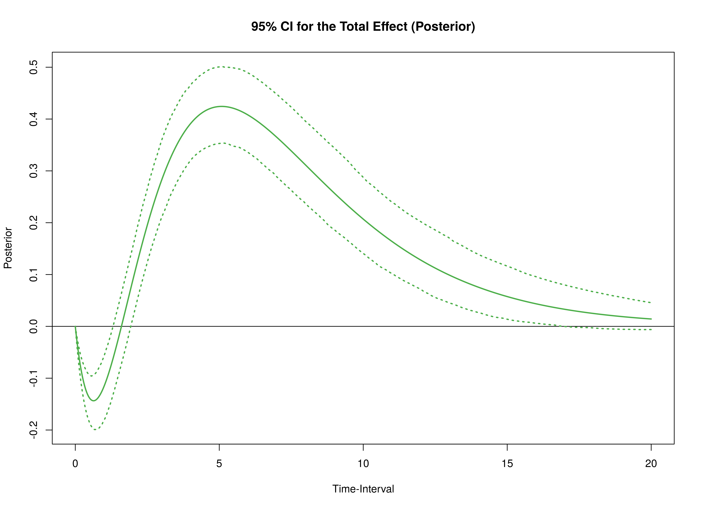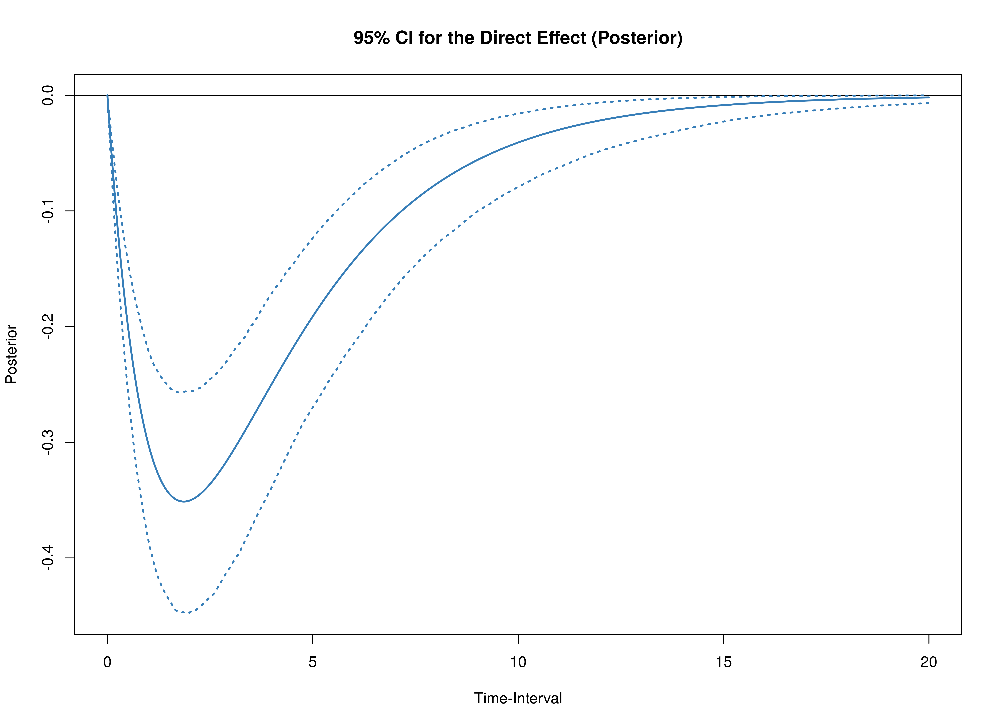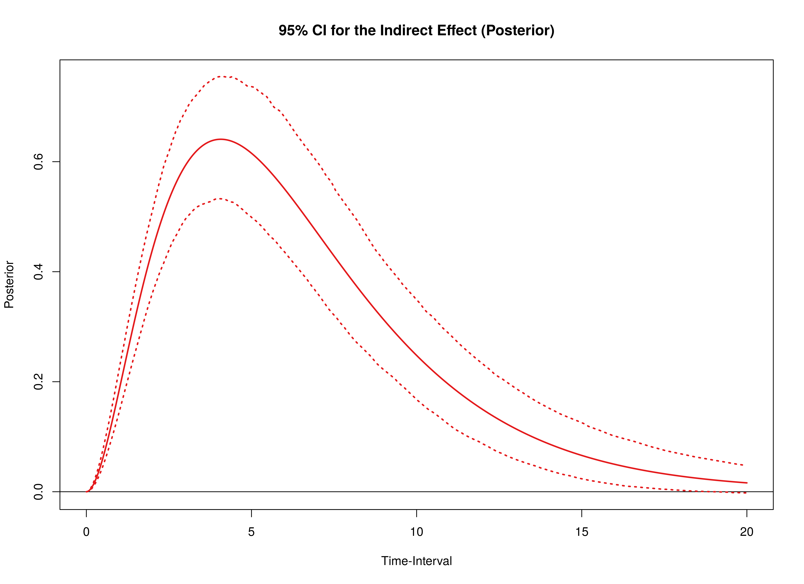
Notice that the lower and upper bounds of the credible intervals can be asymmetric around the posterior mean.
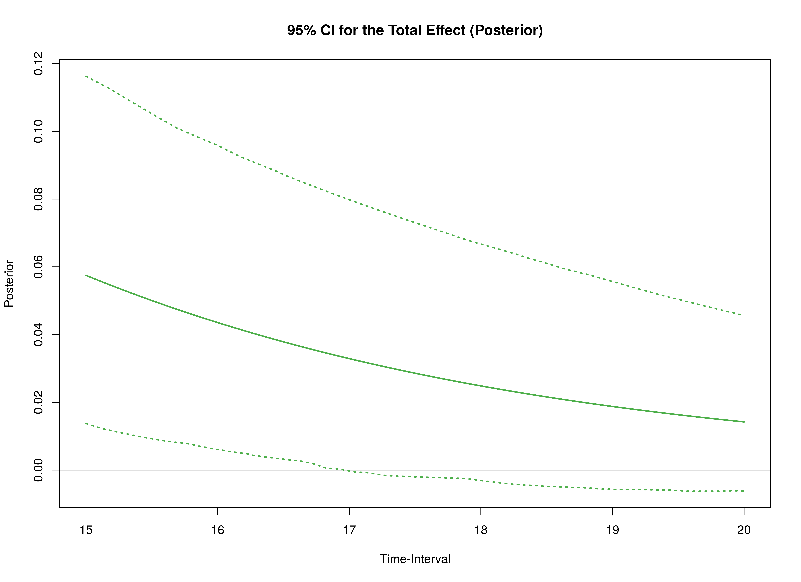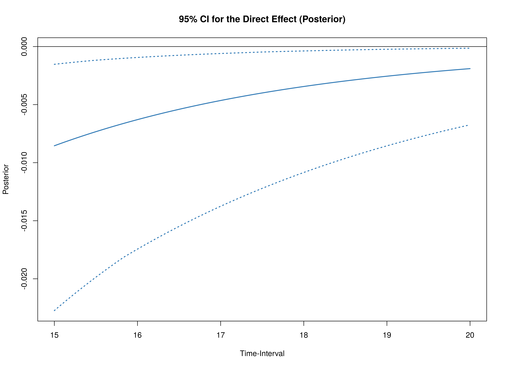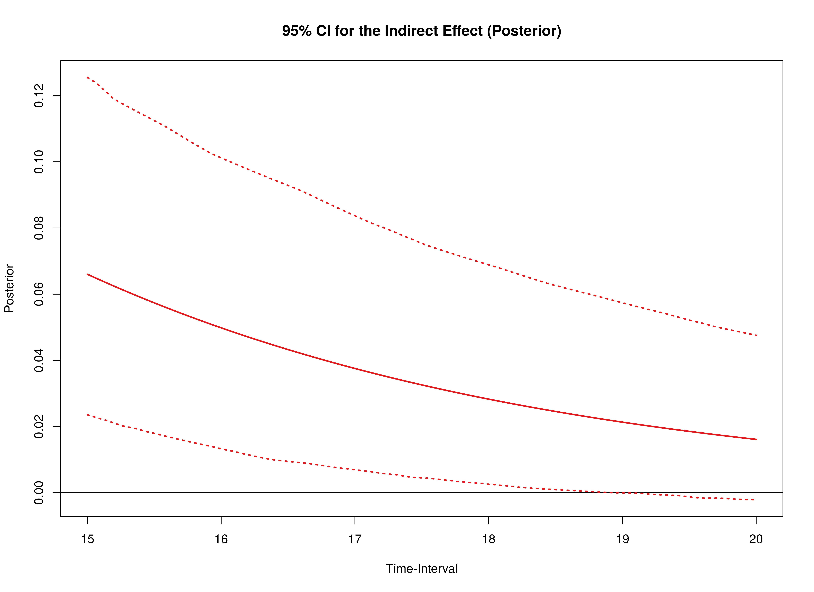